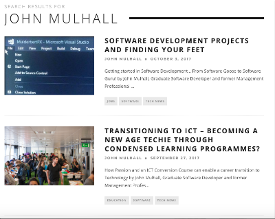

Irish Tech News - Writing/Blogging Portfolio
This page is dedicated to my love of writing for myself and for Irish Tech News, whom I write for a part time basis. My personal blogs are at my Blogspot account and also on my LinkedIn profile. This page is based on my professional publications via Irish Tech News and are as follows:
Articles
Inspiring Future Cities London's Pitch to Dublin Publication Date: 5th December 2017
This article reviews the UK Ambassador to Ireland's welcome for the UK's latest trade mission to Ireland. The trade mission participated at the Inspiring Future Cities event where the UK's trade mission made elevator pitches to Dublin City Council for its Smart City initiative. For more, you can click on the following link for Inspiring Future Cities London's Pitch to Dublin
How do you have an Effective Software Culture Publication Date: 24th November 2017
This article explores a successful company culture and how it can be developed to support sustainable success in software. The article shows how consultative leadership in a correctly structured organisation can deal a sustainable success story in software. For more, you can click on the following link for how to you have an effective Software Culture and Sustainable Success?
KSQL or not KSQL? Publication Date: 24th October 2017
This article reviews the Confluent presentation of the latest version to Dublin's open source community of the big data messenger Apache Kafka. This open source platform is not an integrated streaming platform with its own streaming query language called KSQL. For more, you can click on the following link for KSQL or not KSQL? Apache Kafka's latest release may answer the question
Software Development Projects and Finding Your Feet Publication Date: 3rd October 2017
This article explores the transitioning to software development and technology for those like me with other industry experience and skills, who are looking for a job in sofware development. For more, you can click on the following link for Software Development Projects and Finding Your Feet
Transitioning to ICT and Condensed Learning Programmes Publication Date: 27th September 2017
This article is base upon my experience on the Higher Diploma in Science in Computing at Dublin Business School where I acheived a 1st class honour after an extremely condensed course experience. It explores the transitioning to ICT and the challenges an aspiring ICT Professional like myself may face in the transition. For more, you can click on the following link for Transitioning to ICT - Becoming a new age Technie through condensed learning programmes?
Big Business and Organisational Agility Publication Date: 3rd February 2017
This article explores the need for big business to become more flexible in how they do business from their organisational design to company culture and onwards to daily business practices in order to be sustainable as an enterprise. For more, you can click on the following link for Why Big Business needs to think past products to be more agile in the marketplace
Tech Startups and Company Culture Publication Date: 31st December 2016
This article explores the reasoning why tech startups should not assume company culture is for the established company and start considering the impact of their current business practices on their existing organisation and its growth potential. For more, you can click on the following link for Reinventing the wheel, why tech startups need to consider company culture
The Future of Big Data Publication Date: 21st September 2016
This article reviews a Hadoop User Group Ireland event, which explores the future of big data in terms of its general direction and how Oracle B2B tech including Oracle's Big Data SQL offering. For more, you can click on the following link for The Future of Big Data with Hadoop User Group Ireland and Oracle
Why Process Design Matters Publication Date: 9th September 2016
This article explores process design and management along with why customer input matters in a responsive approach to process management and business sustainability. For more, you can click on the following link for Process Design and Management, why customer input matters
Companies can have longer Lifespans by Developing Sustainable Publication Date: 15th August 2016
This article explores the concept of sustainable capitalism and how companies who play the long game through engagement with their people actually are have longer company lifespans. For more, you can click on the following link for Companies can have longer lifespans by developing sustainable policies to guide corporate practice